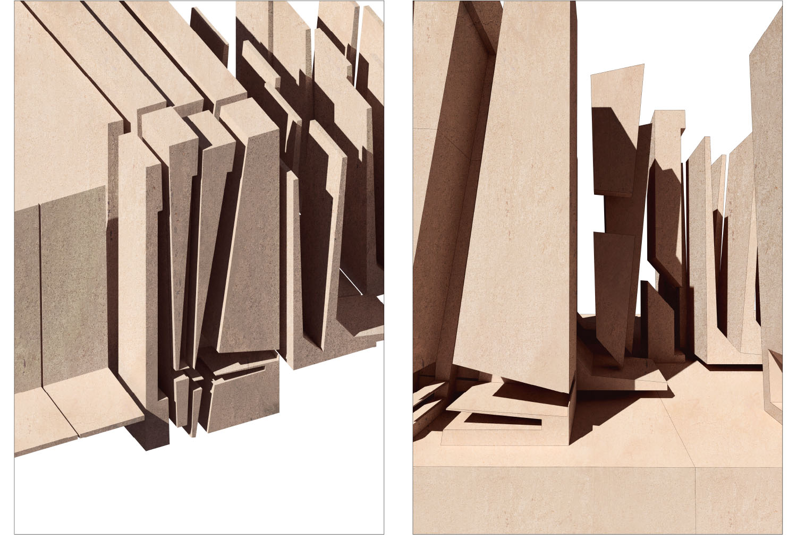
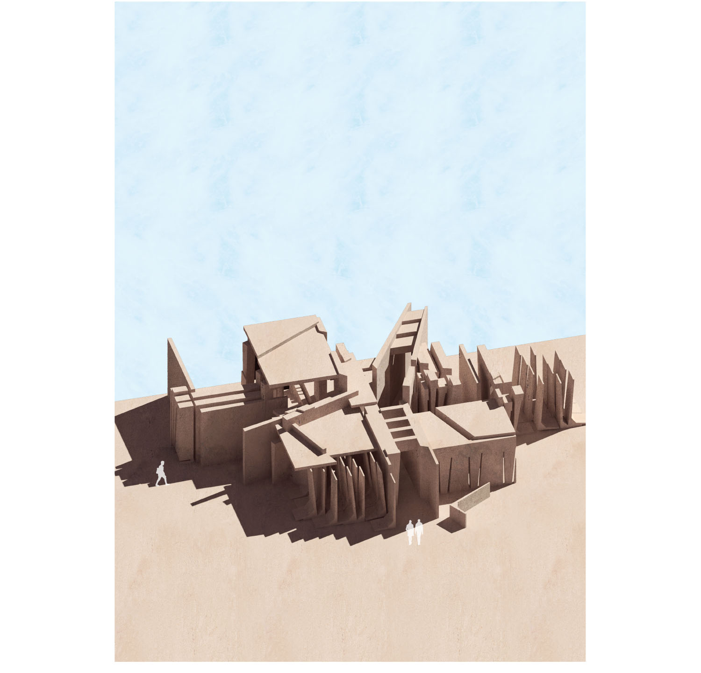
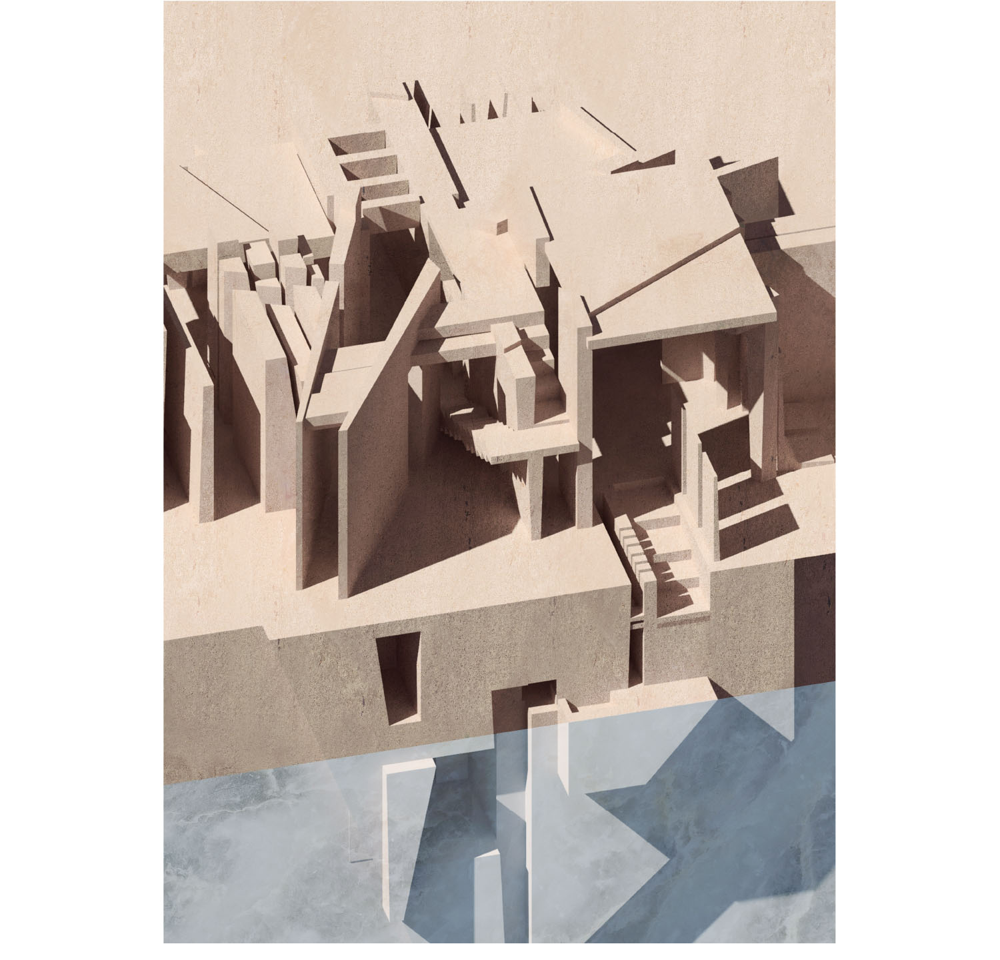
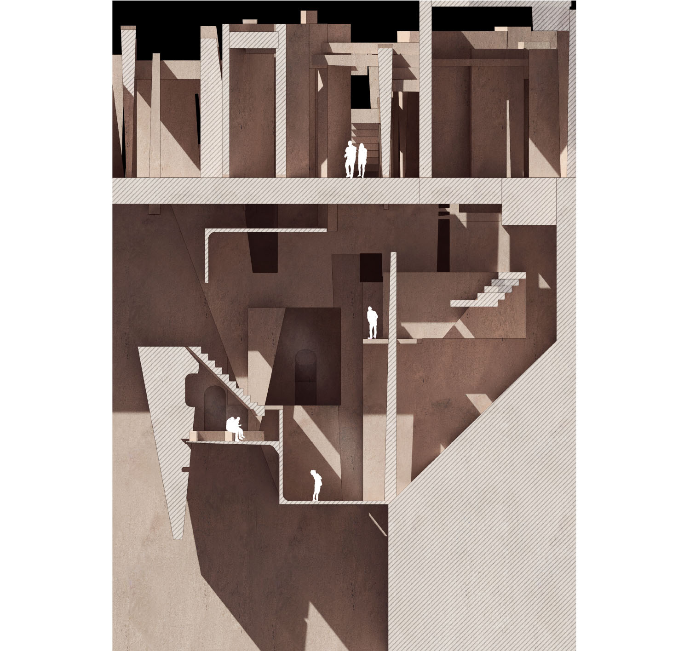

Anonymous Monument
| _university | KU Leuven (Sint-Lucas in Ghent), Belgium |
| _semester | International MSc in Architecture (Resilient and Sustainable Strategies), 2nd semester design studio |
| _year | 2019 |
| _location | Muide, Ghent, Belgium |
| _author(s) | Orçun Yazıcı |
'Muide' is a neighbourhood which shows a collision between different materials and various programs. In addition
to the existing polarities, the area is always in the process of being changed.
Concrete elements that are found in the industrial part, keep pace with the changes but their original
function and program are forgotten over time. Once functional, concrete objects now become 'Anonymous Monuments'
around the site.
This is the context in which I will rethink the process of moving through connected spaces. 'Anonymous Monument'
explores the dialogue between oppositions. It negotiates the relationships and the tensions between complete and
fragment, changing and stabile.



